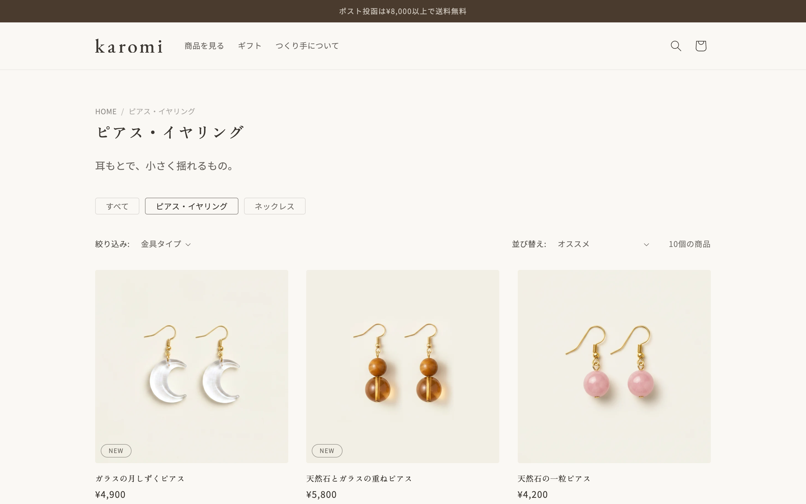
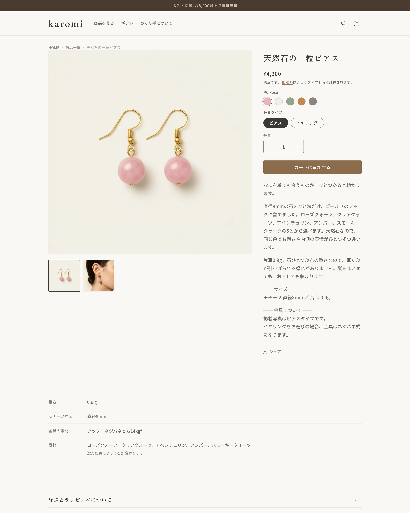
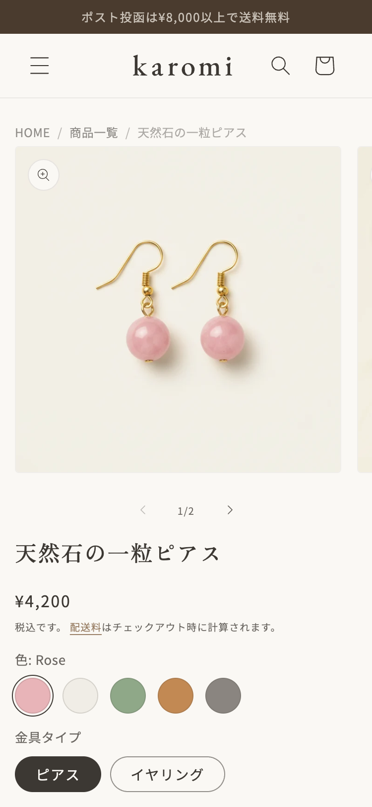

SAORI
｜Shopify構築・カスタマイズ
Dawnテーマの標準機能では届かないところを、ヒアリングして設計し、Liquidのカスタムセクションで形にします。
福岡在住／全国オンライン対応
X（DM）@ssdesignSao ／ Email ◯◯◯@gmail.com
ファーストビューの一文からブランドの言葉へつなぎ、商品を見せる前に世界観を伝える構成にしました。
karomiハンドメイドアクセサリーのネットショップ
- クライアント
- 架空（ヒアリングを想定した自主制作）
- 業種
- 天然石・ガラスのハンドメイドアクセサリー作家
- 背景
- ハンドメイドマーケットへの出品のみで販売しており、自分のショップを持ちたいという想定
- 担当範囲
- ヒアリング／要件定義／ページ構成の設計／デザイン／実装／商品データ登録／商品画像／掲載文章
- 制作期間
- 2026年7月〜8月（約1か月）
- 使用技術
- Shopify（Dawnテーマ）／Liquid／HTML・CSS・JavaScript／Figma
- 規模
- 全7ページ／商品20点・67バリアント／カスタムセクション4本
※商品画像はAIで生成したものです。
本当の目的は「手数料を減らすこと」ではなかった
ヒアリングを重ねるうちに、いちばんの願いが「ほかの作家と並ばず、自分の店として覚えてもらうこと」だと分かりました。マーケット上では、どれだけ良いものを作っても一覧の中の一つとして見られてしまうためです。
そこで、価格や新着を前に出す構成をやめ、世界観から入る組み立てにしました。トップページは、ファーストビュー、ブランドの言葉、カテゴリー、商品、特徴、つくり手の話、ギフト、お知らせの順です。訪れた人が最初に受け取るのは商品名でも価格でもなく、「軽み」という言葉と、その世界観になります。
ブランド名の karomi も、この過程で決めました。
「ピアスをイヤリングに変えられますか」に、毎回メッセージで答えていた
ヒアリングで、問い合わせの多くが金具の変更依頼だと分かりました。出品していたマーケットでは金具違いをバリアントとして持てず、そのつど個別に返信していたためです。
商品ページで完結するよう、色と金具タイプの2軸でバリアントを設計しました。20のデザインを67のバリアントに整理し、ピアスとイヤリングをボタンひとつで切り替えられます。色は円形のスウォッチで表示し、天然石は一点ずつ表情が異なることを明記したうえで、実際の色を写真で確認できるようにしました。
いちばん多い質問は「金属アレルギーでも大丈夫か」だった
この質問への答えは、探させるのではなく、目に入るところに置くべきだと考えました。
トップページの特徴欄、商品ページのスペック表、よくある質問の3か所に、金具の素材を届く形で配置しています。同じ情報を繰り返すのではなく、それぞれの場所で読み手が知りたい粒度に合わせて書き分けました。トップでは「ピアスもイヤリングも選べる」という安心として、商品ページでは素材の仕様として、よくある質問では詳しい説明として置いています。

カテゴリーの切り替えと、金具タイプでの絞り込みを設置。20点が並んでも探しやすいよう、余白と写真の大きさを揃えています。

色と金具を選ぶ導線を上部にまとめ、その下にスペック表、配送やお手入れの折りたたみ、特徴、関連商品と続きます。

表示は画面幅に応じて切り替わります。スマートフォンでの見え方を確認してから公開しました。
クライアントが架空のため、まず人物像と販売の状況、制作の前提条件を自分で立てて文書に固定し、そこを動かさずに進めました。以下は karomi で実際に回した手順です。
| 工程 |
やったこと |
残した資料 |
| ヒアリング・要件定義 |
困りごとと要望を聞き取り、今回やることと今回はやらないことの線を引く |
設計ブリーフ |
| 設計 |
載せる情報の優先順位を決め、ページ構成と回遊の導線を固める。配色・フォント・余白のルールをサイト全体で先に決める |
ワイヤーフレーム／サイト導線図／スタイルガイド／テーマ設定の対応表 |
| 実装 |
設計どおりに組み、標準機能で届かない部分だけをカスタムセクションにする。商品データの登録と掲載文章もこの工程 |
決定事項と積み残しの記録 |
| 公開前チェック |
表示崩れ、スマートフォンでの見え方、消し忘れ、購入から決済までの通し確認 |
チェックリスト |
ヒアリング・要件定義 聞いた要望をそのまま並べるのではなく、今回の目的に効くものと、あとに回してよいものを分けて線を引きます。ここで引いた線を、最後まで判断の基準にしました。
設計 ページ構成と見た目のルールは、実装に入る前に資料の形にしておきます。手を動かしながら決めると、ページごとに判断がぶれるためです。
実装 決定事項は1つのファイルにまとめ、そこを正としました。実装の途中で設計の前提が変わったときは、コードだけ直して終わりにせず、同じ日にワイヤーやスタイルガイド側も直します。あとから見て、どちらが正しいのか分からない資料を残さないためです。設計の資料に決めていない項目が見つかったときも、その場で埋めてから先へ進みます。セクションの余白がこれにあたり、いったん手を止めて全ページ分の基準を決めてから続きを組みました。
公開前チェック 自分で定めたチェックリストを最初から最後まで回し、直した項目は記録に残してから公開しています。
期日について 制作期間は約1か月です。着手時に完成日を先に決め、日割りにして進めました。予備日は取らず、遅れが出たときは日程を延ばす前に、今回やらなくてよいものを外して吸収しています。
karomiで新しく実装したセクションは4本です。選ぶ基準は「ショップの運営者が、管理画面だけで自分で回せるかどうか」に置きました。更新のたびに制作者へ連絡が必要になる作りは、納品後に使われなくなるためです。
1. 期間を指定するお知らせバー
c_announcement-period
課題
イベント出店中の発送休みなど、期間限定のお知らせを出したい。ただし、終わったあとの消し忘れが起きる。
実装
通常時の文言と期間中の文言を1本のセクションに持たせ、開始日と終了日を入れると期間中だけ差し替わります。終了日の翌日0時に自動で通常時へ戻るので、消す作業そのものが発生しません。終了日が空欄のあいだは期間中の文言を出さない作りにして、設定ミスでも表示されないようにしています。Dawn標準の告知バーは非表示にし、バーは常に1本だけ出ます。
2. 商品スペック表
c_pdp_spec
課題
サイズや重さ、素材といった情報を、商品ごとに文章で書き分けるのは続かない。
実装
商品メタフィールドの値を表として出力し、未入力の項目は行ごと自動で消えます。全商品に同じセクションを置いたまま、入力した項目だけが表示されるので、商品ごとの調整が要りません。折りたたみではなく開いた状態で、購入ボタンのすぐ下に配置しています。サイズと重さは購入の判断に直結するため、開かないと見えない場所に置くのは損だと考えました。
このセクションはDawn固有のファイルに依存していないため、他のテーマにもそのまま移せます。
3. 同じ色あいの商品
c_related-color
課題
「この色が気に入った」という入口からの回遊先がない。
実装
表示中の商品と同じ色のバリアントを持つ商品を、最大4件まで自動で表示します。商品ごとの関連付け入力はゼロです。商品ページの最下部に置き、購入の判断を終えたあとの回遊先としています。商品カードの表示にはDawnの既存スニペットを使い、サイト全体でカードの見た目が揃うようにしました。
4. パンくずリスト
c_breadcrumbs
課題
商品ページに現在地の表示がなく、一覧へ戻る導線もない。
実装
商品一覧ではコレクション名を、商品詳細では「商品一覧」を固定で表示します。商品詳細でコレクション名を出さなかったのは、経路によって表示が変わるためです。検索や外部リンクから直接来た場合は空になり、複数のコレクションに属する商品では登録順で変動します。同じ商品が来た経路によって違う表示になるのは、現在地を示すという目的に反すると判断しました。
戻り先のURLはコードに直接書かず、テーマエディタでコレクションを選ぶ形にしています。
標準機能で組んだもの
自作せずに済ませた部分です。
- 新商品バッジ 商品メタフィールドの発売日を基準に表示。空欄の商品にはバッジが出ないため、外し忘れが起きません
- 色と金具タイプの選択 色はメタオブジェクトで管理し、円形のスウォッチで表示。金具タイプでの絞り込みも設置
- 配送・お手入れ・返品の折りたたみ Dawn標準の折りたたみセクション
- 商品データの一括登録 20商品・67バリアント・画像42枚を、CSVで一括登録。代替テキストとバリアントへの画像紐づけも同じCSVで投入
作らなかったもの
色での絞り込みは、実装してから取りやめました。Shopifyの標準タクソノミーに紐づくため、設定した5色ではなく上位カテゴリの色名で表示されてしまい、商品と一致しなかったためです。実際に動かしてみないと分からない挙動でした。
送料無料までの残額を示すバーも検討しましたが、今回の目的に対して効果が薄いと判断し、見送っています。
保守について
CSSは新規ファイルに集約し、テーマの既存ファイルへの追記を最小限にしました。テーマ更新時の影響範囲を絞るためです。セクションの余白は基準値を先に定め、全ページで同じルールを適用しています。
できること・使えるもの
できること
Shopifyストアの構築
テーマの選定から商品・コレクション・バリアントの設計、決済や配送の設定まで、公開できる状態まで一通り組み立てられます。商品数が多い場合は、CSVでの一括登録・一括更新で対応します。
Dawnテーマのカスタマイズ
標準機能で足りない部分は、Liquidでカスタムセクションを新規に実装します。管理画面から文言・画像・表示件数を変更できる形で作るので、公開後の更新はご自身で行えます。
商品情報の設計
メタフィールド・メタオブジェクトを使って、素材やお手入れ方法といった独自の項目を、商品ページに構造化して表示できます。カラーバリエーションのスウォッチ表示にも対応します。
ページ構成とデザインの設計
ヒアリングをもとに、載せる情報とその優先順位を決めてワイヤーフレームに起こします。配色・フォント・余白のルールをサイト全体で先に定めてから実装に入るので、ページが増えても崩れません。
公開前の品質チェック
表示崩れ、スマートフォンでの見え方、テキストの消し忘れなどを、自分で定めたチェックリストで確認してから公開します。
使えるもの
Shopify（Dawnテーマ／Liquid／Shopify CLI）／HTML・CSS・JavaScript／Figma
デザ研デザインコンテスト入賞（2025年）
対応できないこと
商品写真の撮影は承っておりません。撮影方法についてのご提案までは対応できます。
これまでの経歴
Web制作を学び始めたのは2025年6月、Shopifyに絞ったのは2026年1月です。それ以前は約15年、広告制作の進行・校正と、お客さまと直接やりとりする仕事をしてきました。
広告代理店とプロ野球球団では、新聞広告や印刷物の入稿設定・校正・進行管理を担当しました。決められた期日までに、誤りのない状態で公開まで持っていく仕事です。公開前に自分でチェックリストを回して確認する習慣は、このときについたものです。
広告代理店では求人広告の営業も担当し、依頼主から話を聞いて原稿に落とすところまでを一人で行いました。銀行の窓口・渉外、製薬会社のルート営業では、売って終わりではない継続的なお客さま対応をしてきました。ヒアリングから設計するという今の進め方は、ここでの経験が下地になっています。
Web制作の経験は長くありませんが、「聞いて、決めて、期日までに間違いなく形にする」という部分は、これまでやってきたことの延長にあります。
- 2025年6月 Web制作の学習を開始（HTML／CSS／JavaScript、Figma）
- 2026年1月 Shopifyの学習を開始、Dawnテーマのカスタマイズへ
- 2026年8月 ネットショップのデモストア「karomi」を公開